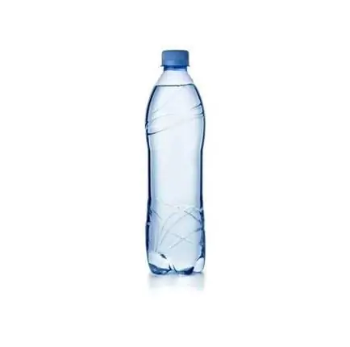

Cucina di Maria
Entradas

Bruschetta di Toscana
Fatias de pão rústico levemente tostadas, cobertas com tomates frescos, manjericão, azeite de oliva extra virgem e um toque de alho.
R$40,00
Carpaccio alla Veneza
Finas fatias de carne bovina crua, delicadamente temperadas com azeite de oliva extra virgem, limão, lascas de queijo parmesão e rúcula fresca.
R$49,90
Pratos Principais
Lasanha a Bolognesa
Deliciosas camadas de massa fresca, recheadas com um suculento molho à bolonhesa feito com carne de qualidade, tomate e ervas finas. Coberta com queijo derretido e gratinada no forno.
R$120,00
Fettuccine di Roma
Massa delicadamente envolvida em um cremoso molho de ovos, queijo pecorino, pancetta crocante e pimenta-do-reino
R$86,00
Ravioli di Gênova
Delicados quadrados de massa fresca, recheados com uma combinação de ingredientes autênticos como queijo, carne ou vegetais. Cozidos à perfeição e servidos com um molho especial.
R$90,00
Spaghetti alla Nápoles
Tradicional massa italiana, longa e fina, servida com molho de tomate fresco, ervas aromáticas e azeite de oliva extra virgem, ou com seu molho preferido.
R$75,00
Sobremesas

Tiramisù di Veneto
Camadas de biscoitos champagne embebidos em café, intercaladas com um creme suave de mascarpone, finalizadas com cacau em pó.
R$29,00
Gelato di Florença
Disponível em diversos sabores autênticos, feito com ingredientes frescos e de alta qualidade. Com menos ar e gordura, oferece uma textura suave e um sabor concentrado.
R$20,00
Affogato di Milão
Espresso servido sobre uma bola de sorvete de baunilha.
R$26,00
Bebidas

Água
R$5,00

Água com gás
R$6,00

Refrigerante
R$10,00

Suco
R$12,00
Cafés

Expresso di Turim
Café forte e encorpado, servido em pequenas doses.
R$6,00

Cappuccino di Milão
Espresso com leite vaporizado e espuma de leite.
R$10,00
Vinhos
Barolo Bussia Prunotto
Barolo Bussia tem coloração vermelha rubi brilhante e vibrante com reflexos granada. O nariz é complexo com aromas florais e notas de frutas vermelhas. Um paladar intenso com taninos doces e sedosos leva a um final longo e harmonioso.
R$595,00